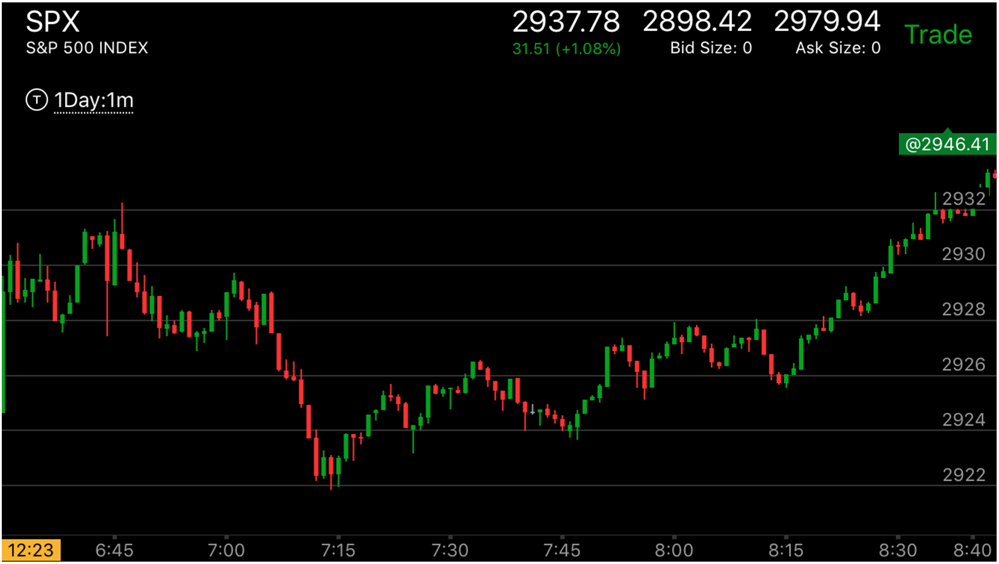
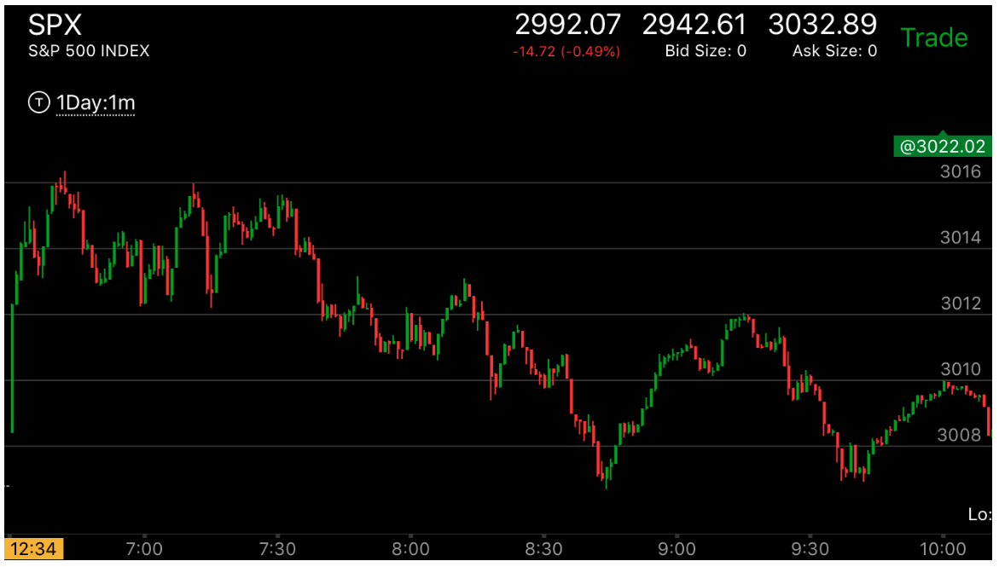

第一浪很大，第二浪比较小而且走平的变化
- 一个反向走势，经常开始的时候第一浪就很大。这时，第一浪的规则似乎不再适用。因为第二浪就更大才可以。但是其实第一浪很大的反向走势，它的第一浪本身就已经越过了前面的关键点。所以它本身就是加速走势，如果稍微回调后，再次加速。
即使加速很小也完成了两次加速。这样就是反转了。
- 这个的第二浪一定是平的，如果是尖锐的，那么就比较简单。一定不是顶部/或底部。
- 如果这个走势发生在开盘，它的第二浪如果还是比较大的，那么反转的可能很大，如果第二浪很小。刚刚超过就走平了。
那么未来会继续第一浪的走势
- 这个走势通常会回调，要么填补真空，要么全面反转。它填补真空的位置，会是越过第一浪转折的地方，形成一个加速。
而且会在这个地方走平很久。这样才是会继续运动的。

图示：这个的开盘第一个bar是上涨的。其实可以不用这个分析。但是也可以应用一下。它在第三分钟出现了一个两段下跌走势。6：40的时候，它快速上涨，很快越过两段走势的起点，形成了加速。
拉回后， 它再次加速上涨。这样这个加速走势就坐实了。虽然它的第二段加速不如第一段。但是第一段加速本身就是有加速走势。所以足够了

图示：这个第一浪很大，立刻拉回后，第二浪比较小。但是其实也不算很小。它在顶部走平，
这个走势可能反转，也可能填补真空后，继续。但是它回调的时候，一直没有在底部停留。而是很快的拉回。
这样，它很可能不会是填补真空，而是全面反转。